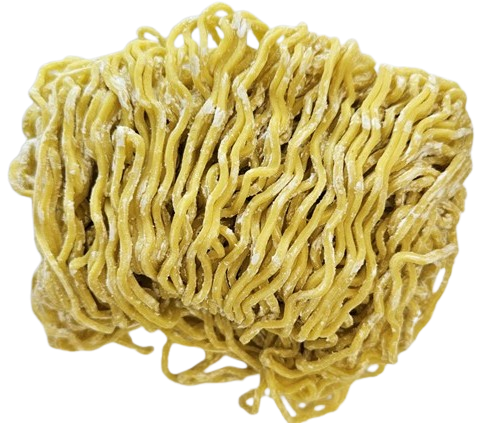
With or without eggSapporo style
札幌
Springy medium-thick curls that hold body in rich miso and shoyu broths.
- Portion
- 130 g
- Allergens
- Gluten (egg optional)
- Shelf life
- 12 months at −18 °C
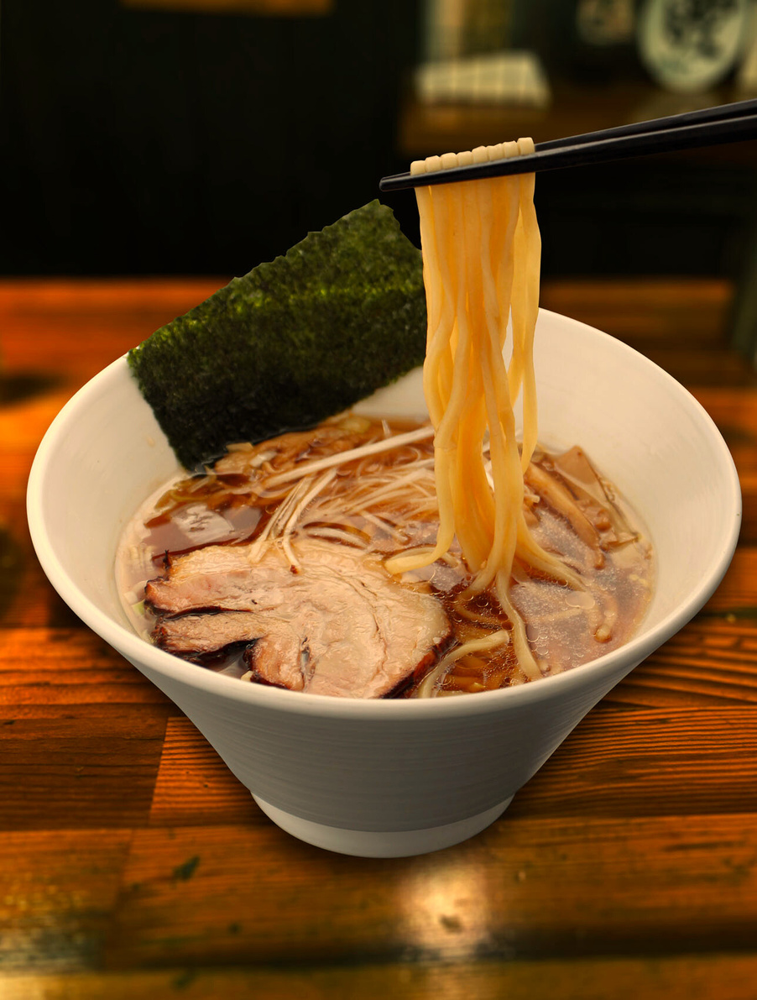
Seventy years of Kanno family craft, Japanese recipes and know-how, produced in central Poland at the heart of Europe's logistics network — supplying ramen kitchens and retail with frozen noodles of consistent, chef-grade texture.

For over 70 years the Kanno family has perfected noodle-making in the heart of Tokyo. Since 1949 their precision has supplied thousands of restaurants across Japan, Asia, North America and Australia — grounded in craftsmanship and a clear mission: safe, high-quality products that carry noodle culture forward.
The joint venture between Mr. Yoshio Kanno and a Polish family business opened a new chapter. An independent production site was established in Poland, built on Kanno's recipes, standards and the support of their food technologists — the authenticity of Japanese noodles, built on tradition and mutual trust.


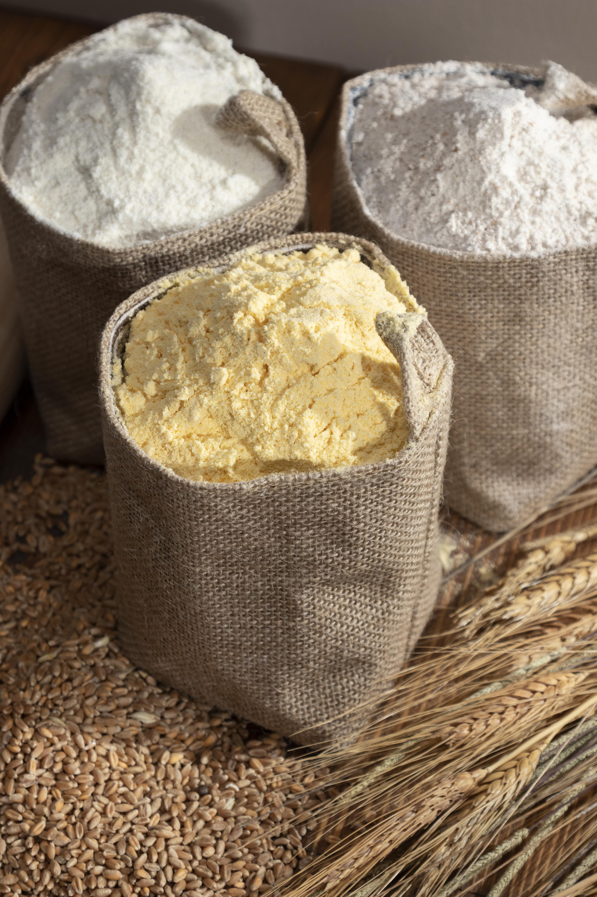

Every style follows a traditional Japanese recipe and the same production standard. Formats, portion weights and packaging are adapted to each partner.

With or without eggSpringy medium-thick curls that hold body in rich miso and shoyu broths.
 With or without egg
With or without egg
Hand-crimped irregular strands with a chewy bite that grips thicker broths.
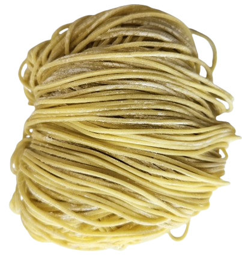
With or without eggClean straight strands, the classic pairing for clear shoyu and shio ramen.
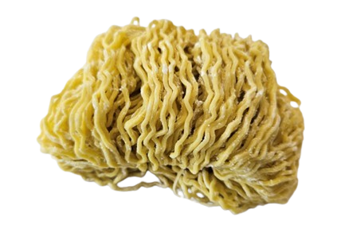
With or without eggWavy cut that carries broth along the strand from first bite to last.
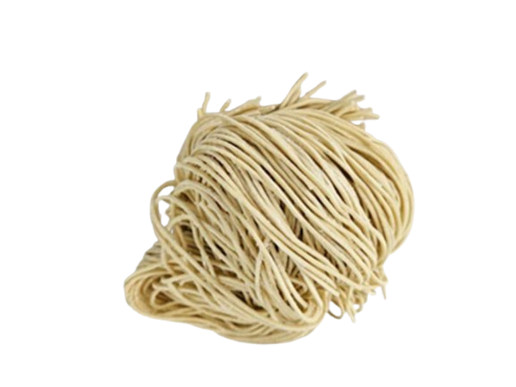
With or without eggThin, firm and low-hydration — built for short cooking in pork-bone broth.
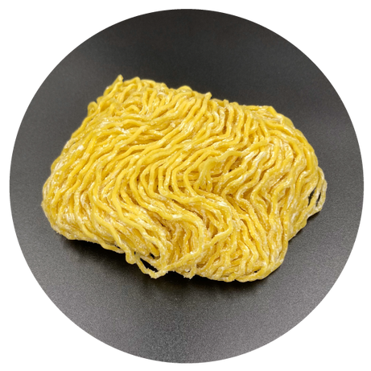
Made to briefDeveloped with your kitchen or category team: hydration, cut, colour and format.
Every batch is produced under controlled conditions and overseen by experienced food technologists, with defined standards for texture, weight and hydration. Selected ingredients and proven Japanese recipes keep each delivery identical to the last.
Standard film bag holds 5 portions — the best balance of production efficiency, freezing performance and handling. Configurations from 3 to 7 portions are available.
10 film packs per carton, 600 × 400 × 80 mm, labelled with full product information and ventilated to support efficient freezing.
Up to 80 cartons, 4 per layer over 20 layers, wrapped and labelled for secure, traceable transport.
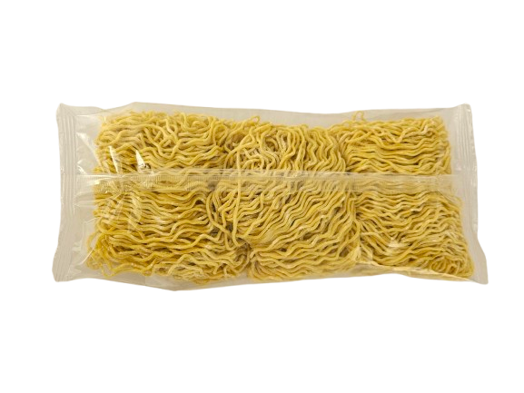
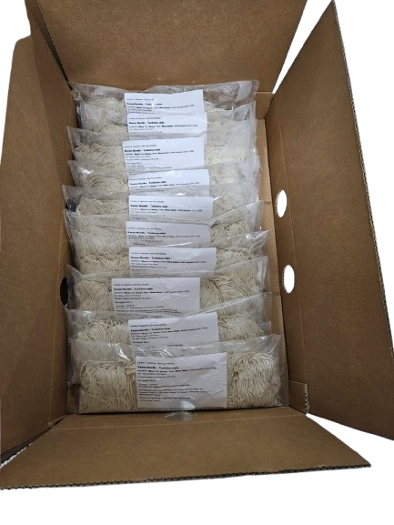
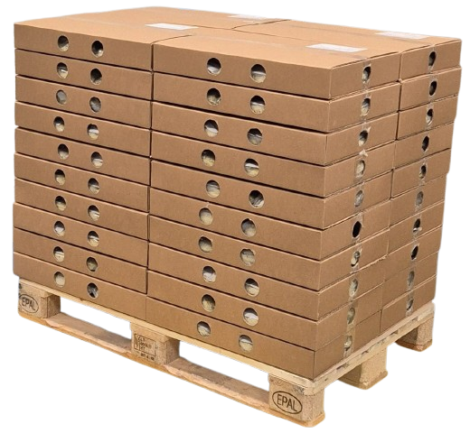
Our noodles are made in a modern facility with clearly defined clean zones and strict process control, backed by IFS certification. Every product is stored in optimised conditions that preserve freshness, texture and full flavour.
The site sits in central Poland, close to major transport routes — fast, cost-effective distribution to domestic and international markets from one of Europe's strategic logistics hubs.

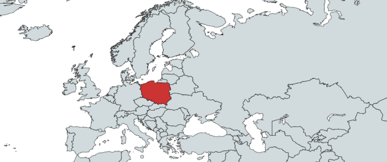
Tell us what you serve or sell and we will come back with a specification, portion format and lead time.
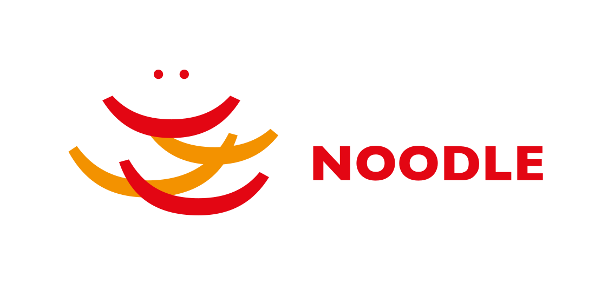